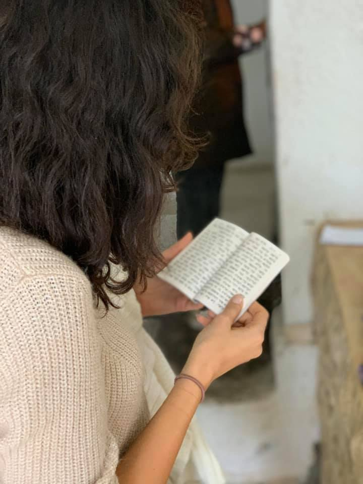

December 1,2020 , the Mimouna Club AUI organized a trip to Rabat where the present members had the opportunity to visit some important Jewish sites of the capital. We started by visiting the synagogue Shalom Zaoui in the Mellah. After a warm welcome from the Rabbi, we entered and discussed the different components of the synagogue's structure. We then joined another synagogue: the Talmud Torah synagogue where our dear friend Abdou Ladino presented an overview of the history of Jews in Morocco and how they moved throughout time. He also mentioned the role Morocco played in their protection. We later visited the Old Jewish cemetery of Rabat where members lighted candles for Jewish patrons before gathering for lunch at La Menora restaurant. The food was great and the atmosphere was charming. The trip ended by visiting the Mausoleum to pay tribute to the Moroccan kings.
